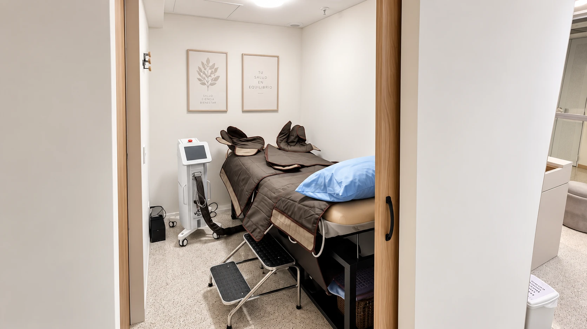

Precio del tratamiento de várices en Colombia: de qué depende
Buscas una cifra concreta y lo que encuentras son rangos tan distintos entre sí que no sirven de mucho. No te vamos a inventar un número: aquí va lo que realmente mueve el precio, para que llegues a tu valoración con preguntas claras, no con una cifra que nadie te puede garantizar sin verte.

Escribes "precio tratamiento várices Colombia" en Google y aparecen números de todos los tamaños: clínicas distintas, ciudades distintas, hasta países distintos, cada uno con su propia tabla. Es normal confundirse. La verdad incómoda es que ninguna cifra suelta te sirve de guía real: ese costo no es un dato fijo, depende de tu caso específico, y eso solo se sabe después de una valoración.
Por qué el precio del tratamiento de várices en Colombia no es una tarifa única
Las várices no son todas iguales. Hay arañitas vasculares finas que apenas se notan, venas reticulares algo más gruesas y várices grandes que abultan la piel. Cada una pide un manejo distinto, y es ese manejo el que cambia el costo, no una lista de precios por clínica.
Esto es, en general, lo que más pesa a la hora de calcular un tratamiento:
- Tipo y tamaño de la várice. Una arañita superficial no exige lo mismo que una vena safena comprometida.
- Extensión del problema. No es lo mismo una zona puntual en una pierna que várices distribuidas en ambas.
- Número de sesiones. La escleroterapia, por ejemplo, casi nunca se resuelve en una sola sesión; varía según cómo responda cada paciente.
- Si incluye el eco doppler diagnóstico o si ya lo traes hecho de otro lado.
- El seguimiento posterior, porque valorar cómo evoluciona la vena también hace parte del proceso, no es un gasto aparte que se improvisa.
El eco doppler, el paso que decide todo lo demás
Antes de hablar de cuántas sesiones o qué técnica, hay una pregunta previa: ¿qué está pasando realmente con tus venas? Eso solo lo responde un eco doppler venoso, que muestra si el problema es superficial o si hay una vena más profunda que no está funcionando bien. Sin ese dato, cualquier plan de tratamiento (y cualquier precio) es una suposición.
En Seravena nunca damos un precio por teléfono o por WhatsApp antes de ver el eco doppler. No porque queramos hacerte ir hasta El Poblado sin necesidad, sino porque prometer una cifra sin conocer tu caso sería mentirte: dos pacientes con la misma queja pueden necesitar planes completamente distintos.
Particular, no EPS: qué cambia en el costo
Si tu caso entra dentro del Plan de Beneficios en Salud y tu EPS lo autoriza, una parte del proceso puede quedar cubierta por esa vía; qué tanto y en cuánto tiempo depende de cada EPS, y eso no lo podemos prometer nosotros. Seravena atiende solo de forma particular: no trabajamos con EPS ni con medicina prepagada, no necesitas remisión ni autorización previa, y agendas directo por WhatsApp. Si quieres entender mejor las dos rutas, lo explicamos a fondo en várices por EPS o particular: diferencias reales en Colombia.
En nuestro caso, el eco doppler se hace el mismo día, en el mismo consultorio de El Poblado, sin mandarte a otra sede solo para la ecografía. Eso simplifica el proceso, aunque no cambia la regla de fondo: el precio final sale de lo que encontremos, no de una tabla previa.
Qué tratamientos existen (y por qué el precio varía entre ellos)
Según la guía que encuentres, verás mencionadas la escleroterapia, el láser o, en casos más avanzados, la cirugía. No todas sirven para lo mismo ni cuestan lo mismo, porque no todas resuelven el mismo tipo de vena. La escleroterapia suele ser la opción para arañitas y várices pequeñas; en nuestra guía completa de tratamiento de várices sin cirugía explicamos las opciones una por una, con sus pros y sus límites, para que entiendas de qué está hablando tu médico antes de que te hable de números.
Hay algo que sí podemos decir con honestidad: el tratamiento más barato no siempre es el más adecuado para tu caso, y el más caro tampoco garantiza mejores resultados por sí solo. Lo que determina si vale la pena es si responde a lo que muestra tu eco doppler.
Si ya decidiste que quieres resolverlo pronto, el primer paso no es seguir comparando cifras sueltas en internet: es pedir una valoración de tratamiento de várices en Medellín con eco doppler incluido, para que lo que te digamos después sea un plan real y no un estimado al aire. Puedes agendar tu valoración cuando quieras.
Preguntas frecuentes
¿Por qué Seravena no da un precio de tratamiento de várices por teléfono o WhatsApp?
Porque el costo depende del tipo de várice, de cuántas sesiones hacen falta y de los hallazgos del eco doppler. Dar una cifra sin ver tus piernas ni tu ecografía sería prometer algo que todavía no sabemos.
¿El eco doppler tiene costo aparte del tratamiento?
Sí, es un estudio propio que se cobra de forma independiente, porque es el que permite definir el plan de tratamiento. En Seravena se hace en el mismo consultorio de El Poblado, en Medellín, así que no necesitas otra cita en otra sede.
Si mi EPS no cubre el tratamiento, ¿cuánto me tocaría pagar por mi cuenta?
No lo podemos decir sin conocer tu caso ni tu EPS específica: cada aseguradora define sus propias coberturas y procesos. Seravena atiende solo de forma particular, sin EPS ni prepagada, así que tu costo ahí dependerá de lo que la valoración determine, no de una tarifa fija.
¿Entre más várices tenga, el tratamiento siempre sale más caro?
En general sí influye, porque más venas afectadas suelen requerir más sesiones o más producto en cada una. Pero también pesa el tipo de vena: unas arañitas pequeñas en varias zonas pueden tratarse distinto a una várice gruesa en una sola pierna, así que el número no lo es todo.